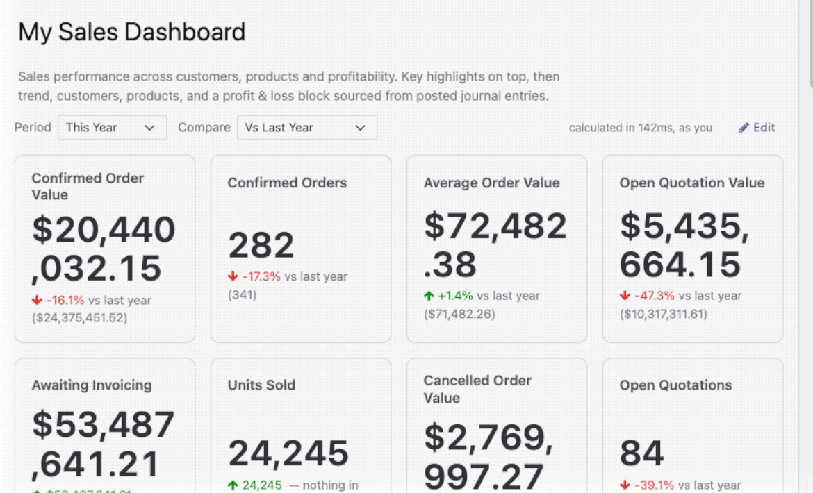

<meta charset="utf-8">
<section class="aidash" style='font-family:-apple-system, BlinkMacSystemFont, "Segoe UI", Roboto, Helvetica, Arial, sans-serif; color:#0F172A; background:#fff; line-height:1.65; max-width:1020px; margin:0 auto; padding:0 0 56px; -webkit-font-smoothing:antialiased'>


<!-- ==================================================================== hero -->
<div class="hero" style="padding:clamp(38px, 5.938vw, 52px) clamp(20px, 3.125vw, 32px) clamp(32px, 5vw, 46px); text-align:center; background:linear-gradient(170deg, #0F172A 0%, #134E4A 100%); border-radius:18px; color:#fff">
  <span class="pill" style="display:inline-block; background:rgba(255, 255, 255, 0.13); border:1px solid rgba(255, 255, 255, 0.28); color:#fff; border-radius:999px; padding:7px 18px; font-size:13.5px; font-weight:650; margin:0 0 22px">Free &amp; open source &middot; Built by talking to Claude or ChatGPT</span>
  <h1 style="font-size:clamp(33px, 5.156vw, 46px); line-height:1.06; font-weight:800; letter-spacing:-0.03em; margin:0 0 16px; color:#fff">Describe the dashboard.<br>Get the dashboard.</h1>
  <p style="margin:0 auto 22px; font-size:19px; color:#C3D2D6; max-width:610px">
    Say what you want to see in one sentence. It appears in Odoo as a real
    screen you and your team open like any other &mdash; live, always current, always
    your own numbers.
  </p>

  <div class="demo" style="display:flex; flex-wrap:wrap; gap:16px; align-items:stretch; max-width:840px; margin:26px auto 0; text-align:left">
    <div class="chat" style="flex:1 1 300px; background:#0B1220; border:1px solid rgba(255, 255, 255, 0.1); border-radius:14px; padding:20px">
      <p class="said" style="margin:0 0 14px; background:#1E293B; color:#E2E8F0; border-radius:12px 12px 4px 12px; padding:11px 15px; font-size:15px">Build me a dashboard of monthly revenue this year, with the totals at the top.</p>
      <p class="replied" style="margin:0 0 8px; color:#94A3B8; font-size:13.5px"><b style="color:#5EEAD4; font-weight:650">Odoo</b> &middot; created a draft dashboard</p>
      <p class="replied" style="margin:0 0 8px; color:#94A3B8; font-size:13.5px">Here it is &mdash; 6 months of revenue, with totals. Have a look and publish it if it's right.</p>
    </div>
    <div class="arrow" style="align-self:center; color:#5EEAD4; font-size:26px; flex:0 0 auto; padding:0 2px">&rarr;</div>
    <div class="board" style="flex:1 1 330px; background:#fff; border-radius:14px; padding:18px 18px 20px">
      <p class="bt" style="margin:0 0 3px; font-size:13px; font-weight:750; color:#0F172A">Revenue this year</p>
      <p class="bs" style="margin:0 0 14px; font-size:11.5px; color:#64748B">Updated the moment you open it</p>
      <div class="tiles" style="display:flex; gap:8px; margin:0 0 12px">
        <div class="tile" style="flex:1; background:#F8FAFC; border-radius:8px; padding:9px 10px">
<div class="tn" style="font-size:9.5px; color:#64748B; text-transform:uppercase; letter-spacing:0.07em; margin:0 0 2px">Revenue</div>
<div class="tv" style="font-size:17px; font-weight:750; color:#0F172A">412k</div>
</div>
        <div class="tile" style="flex:1; background:#F8FAFC; border-radius:8px; padding:9px 10px">
<div class="tn" style="font-size:9.5px; color:#64748B; text-transform:uppercase; letter-spacing:0.07em; margin:0 0 2px">Orders</div>
<div class="tv" style="font-size:17px; font-weight:750; color:#0F172A">1,284</div>
</div>
        <div class="tile" style="flex:1; background:#F8FAFC; border-radius:8px; padding:9px 10px">
<div class="tn" style="font-size:9.5px; color:#64748B; text-transform:uppercase; letter-spacing:0.07em; margin:0 0 2px">Avg order</div>
<div class="tv" style="font-size:17px; font-weight:750; color:#0F172A">321</div>
</div>
      </div>
      <div class="bars" style="display:flex; align-items:flex-end; gap:7px; height:82px; padding:0 2px">
        <div class="bar" style="flex:1; background:#0D9488; border-radius:3px 3px 0 0; opacity:0.88; height:44%"></div>
        <div class="bar" style="flex:1; background:#0D9488; border-radius:3px 3px 0 0; opacity:0.88; height:58%"></div>
        <div class="bar" style="flex:1; background:#0D9488; border-radius:3px 3px 0 0; opacity:0.88; height:51%"></div>
        <div class="bar" style="flex:1; background:#0D9488; border-radius:3px 3px 0 0; opacity:0.88; height:73%"></div>
        <div class="bar" style="flex:1; background:#0D9488; border-radius:3px 3px 0 0; opacity:0.88; height:66%"></div>
        <div class="bar" style="flex:1; background:#0D9488; border-radius:3px 3px 0 0; opacity:0.88; height:92%"></div>
      </div>
      <div class="axis" style="display:flex; gap:7px; margin:6px 0 0; padding:0 2px">
<span style="flex:1; font-size:9.5px; color:#64748B; text-align:center">Jan</span><span style="flex:1; font-size:9.5px; color:#64748B; text-align:center">Feb</span><span style="flex:1; font-size:9.5px; color:#64748B; text-align:center">Mar</span><span style="flex:1; font-size:9.5px; color:#64748B; text-align:center">Apr</span><span style="flex:1; font-size:9.5px; color:#64748B; text-align:center">May</span><span style="flex:1; font-size:9.5px; color:#64748B; text-align:center">Jun</span>
</div>
    </div>
  </div>
  <p class="cap" style="margin:16px 0 0; font-size:13.5px; color:#93A6AC; max-width:610px">One sentence in. A working Odoo screen out.</p>
</div>

<!-- ================================================================= the real thing -->
<div class="sec" style="padding:44px 0; border-top:1px solid #E2E8F0">
  <h2 style="font-size:clamp(25px, 3.906vw, 30px); line-height:1.2; font-weight:750; letter-spacing:-0.02em; margin:0 0 10px">This is what one sentence gets you</h2>
  <p class="lede" style="margin:0 0 28px; font-size:18px; color:#475569; max-width:640px">
    A real Odoo screen, not an export. Worked out the moment you open it, with
    your own permissions.
  </p>
  
  <p style="margin:10px 0 0; text-align:center; color:#64748B; font-size:13.5px">
    Every figure compares against last year, and clicks through to the records behind it.
  </p>
  <p style="margin:18px 0 0; text-align:center">
    <a href="https://youtu.be/G16egkDkqp0" style="display:inline-block;background:#0D9488;color:#fff;text-decoration:none;
              font-weight:650;font-size:15px;padding:11px 26px;border-radius:9px">
      Watch it being built on YouTube
    </a>
  </p>
</div>

<!-- ================================================================ the point -->
<div class="sec" style="padding:44px 0; border-top:1px solid #E2E8F0">
  <h2 style="font-size:clamp(25px, 3.906vw, 30px); line-height:1.2; font-weight:750; letter-spacing:-0.02em; margin:0 0 10px">Nobody builds the dashboard they wanted</h2>
  <p class="lede" style="margin:0 0 28px; font-size:18px; color:#475569; max-width:640px">
    Not because it is hard, but because it is twenty fiddly minutes and you only
    wanted to know one thing. So the question goes unanswered, or it becomes a
    spreadsheet that is out of date by Thursday.
  </p>
  <div class="grid" style="display:flex; flex-wrap:wrap; gap:14px">
    <div class="col" style="flex:1 1 290px; background:#fff; border:1px solid #E2E8F0; border-radius:14px; padding:22px 24px">
      <h3 style="font-size:18px; line-height:1.35; font-weight:700; margin:0 0 6px">Ask in a sentence</h3>
      <p style="margin:0; font-size:15px; color:#475569">"Open orders by salesperson, this quarter." "Stock value by category."
        "Late deliveries by week." However you would say it out loud.</p>
    </div>
    <div class="col" style="flex:1 1 290px; background:#fff; border:1px solid #E2E8F0; border-radius:14px; padding:22px 24px">
      <h3 style="font-size:18px; line-height:1.35; font-weight:700; margin:0 0 6px">Look before you keep it</h3>
      <p style="margin:0; font-size:15px; color:#475569">What comes back is a draft only you can see. Nothing joins your Odoo
        until you have looked at it and said yes.</p>
    </div>
    <div class="col" style="flex:1 1 290px; background:#fff; border:1px solid #E2E8F0; border-radius:14px; padding:22px 24px">
      <h3 style="font-size:18px; line-height:1.35; font-weight:700; margin:0 0 6px">Change it by asking</h3>
      <p style="margin:0; font-size:15px; color:#475569">"Make that a line chart." "Split it by region." It reads what is
        already there and adjusts, rather than starting over.</p>
    </div>
    <div class="col" style="flex:1 1 290px; background:#fff; border:1px solid #E2E8F0; border-radius:14px; padding:22px 24px">
      <h3 style="font-size:18px; line-height:1.35; font-weight:700; margin:0 0 6px">Or nudge it by hand</h3>
      <p style="margin:0; font-size:15px; color:#475569">Drag tiles around, resize, rename, recolour. For small things it is
        quicker than going back to the conversation.</p>
    </div>
  </div>
</div>

<!-- ================================================================== trust 1 -->
<div class="sec" style="padding:44px 0; border-top:1px solid #E2E8F0">
  <div class="quote" style="background:#F8FAFC; border-left:4px solid #0D9488; border-radius:0 14px 14px 0; padding:26px 30px">
    <h2 style="font-size:clamp(25px, 3.906vw, 30px); line-height:1.2; font-weight:750; letter-spacing:-0.02em; margin:0 0 10px; margin-bottom:12px">It saves the question, never the numbers</h2>
    <p style="margin:0; font-size:16.5px; color:#475569">
      This is the part worth understanding, because everything good about it
      follows from it. A dashboard here stores <b style="color:#0F172A">"revenue by month, this
      year"</b> &mdash; it does not store the figures. They are worked out fresh every
      single time somebody opens it.
    </p>
    <p style="margin:0; font-size:16.5px; color:#475569; margin-top:14px">
      So it is never out of date. There is no refresh to remember, no overnight
      job to fail quietly, and no screenshot circulating that stopped being true
      three weeks ago.
    </p>
  </div>
</div>

<!-- ================================================================== trust 2 -->
<div class="sec" style="padding:44px 0; border-top:1px solid #E2E8F0">
  <h2 style="font-size:clamp(25px, 3.906vw, 30px); line-height:1.2; font-weight:750; letter-spacing:-0.02em; margin:0 0 10px">And it shows each person their own figures</h2>
  <p class="lede" style="margin:0 0 28px; font-size:18px; color:#475569; max-width:640px">
    Because the numbers are worked out when the dashboard is opened, they are
    worked out <b>as whoever opened it</b>.
  </p>
  <div class="grid" style="display:flex; flex-wrap:wrap; gap:14px">
    <div class="col" style="flex:1 1 290px; background:#fff; border:1px solid #E2E8F0; border-radius:14px; padding:22px 24px">
      <h3 style="font-size:18px; line-height:1.35; font-weight:700; margin:0 0 6px">No one sees more than they should</h3>
      <p style="margin:0; font-size:15px; color:#475569">If a colleague cannot open a record in Odoo today, it will not appear
        in their view of a dashboard either. The permissions you already set up
        are the ones that apply.</p>
    </div>
    <div class="col" style="flex:1 1 290px; background:#fff; border:1px solid #E2E8F0; border-radius:14px; padding:22px 24px">
      <h3 style="font-size:18px; line-height:1.35; font-weight:700; margin:0 0 6px">Right for multi-company, automatically</h3>
      <p style="margin:0; font-size:15px; color:#475569">Running more than one company in the same Odoo? Each person sees their
        own. There is nothing to configure for it.</p>
    </div>
    <div class="col" style="flex:1 1 290px; background:#fff; border:1px solid #E2E8F0; border-radius:14px; padding:22px 24px">
      <h3 style="font-size:18px; line-height:1.35; font-weight:700; margin:0 0 6px">Click a bar, see the records</h3>
      <p style="margin:0; font-size:15px; color:#475569">Every figure goes back to the orders or invoices behind it, in a normal
        Odoo list. Nothing is a black box you have to take on faith.</p>
    </div>
    <div class="col" style="flex:1 1 290px; background:#fff; border:1px solid #E2E8F0; border-radius:14px; padding:22px 24px">
      <h3 style="font-size:18px; line-height:1.35; font-weight:700; margin:0 0 6px">Every version kept</h3>
      <p style="margin:0; font-size:15px; color:#475569">Asked for a change and preferred it before? Put it back with one click.
        Nothing you build can be lost by experimenting.</p>
    </div>
  </div>
</div>

<!-- ==================================================================== setup -->
<div class="sec" style="padding:44px 0; border-top:1px solid #E2E8F0">
  <h2 style="font-size:clamp(25px, 3.906vw, 30px); line-height:1.2; font-weight:750; letter-spacing:-0.02em; margin:0 0 10px">Getting started</h2>
  <div class="step" style="display:flex; gap:18px; padding:20px 0; border-top:1px solid #E2E8F0; border-top:0">
    <div class="num" style="flex:0 0 34px; height:34px; border-radius:50%; background:#CCFBF1; color:#0D9488; font-weight:750; font-size:15px; display:flex; align-items:center; justify-content:center">1</div>
    <p style="margin:0; font-size:15.5px; color:#475569"><b style="color:#0F172A">Install AI MCP first</b> &mdash; it is free too, and it is what connects your
      assistant to Odoo. Odoo will offer to install it with this one.</p>
  </div>
  <div class="step" style="display:flex; gap:18px; padding:20px 0; border-top:1px solid #E2E8F0">
    <div class="num" style="flex:0 0 34px; height:34px; border-radius:50%; background:#CCFBF1; color:#0D9488; font-weight:750; font-size:15px; display:flex; align-items:center; justify-content:center">2</div>
    <p style="margin:0; font-size:15.5px; color:#475569"><b style="color:#0F172A">Connect your assistant once.</b> Copy one address, paste it in, sign in
      with your normal Odoo login. About two minutes, and you only do it once.</p>
  </div>
  <div class="step" style="display:flex; gap:18px; padding:20px 0; border-top:1px solid #E2E8F0">
    <div class="num" style="flex:0 0 34px; height:34px; border-radius:50%; background:#CCFBF1; color:#0D9488; font-weight:750; font-size:15px; display:flex; align-items:center; justify-content:center">3</div>
    <p style="margin:0; font-size:15.5px; color:#475569"><b style="color:#0F172A">Ask for a dashboard.</b> That is the whole thing. No setup screens, no
      choosing chart types from a menu, nothing to configure first.</p>
  </div>
</div>

<!-- =================================================================== limits -->
<div class="sec" style="padding:44px 0; border-top:1px solid #E2E8F0">
  <div class="limits" style="border:1px dashed #CBD5E1; border-radius:16px; padding:30px 32px">
    <h2 style="font-size:clamp(25px, 3.906vw, 30px); line-height:1.2; font-weight:750; letter-spacing:-0.02em; margin:0 0 10px">Free, and honest about where it stops</h2>
    <p class="lede" style="margin:0 0 28px; font-size:18px; color:#475569; max-width:640px; margin-bottom:20px">
      Everything that makes it work is here. What is missing is what you need
      once a whole team depends on it.
    </p>
    <div class="lrow" style="display:flex; gap:14px; padding:11px 0; border-top:1px solid #E2E8F0; font-size:15.5px; border-top:0">
<span class="tick" style="flex:0 0 22px; color:#047857; font-weight:800">&check;</span><span>Build and change dashboards by asking, as many times as you like</span>
</div>
    <div class="lrow" style="display:flex; gap:14px; padding:11px 0; border-top:1px solid #E2E8F0; font-size:15.5px">
<span class="tick" style="flex:0 0 22px; color:#047857; font-weight:800">&check;</span><span>Charts, totals, tables and two-way breakdowns</span>
</div>
    <div class="lrow" style="display:flex; gap:14px; padding:11px 0; border-top:1px solid #E2E8F0; font-size:15.5px">
<span class="tick" style="flex:0 0 22px; color:#047857; font-weight:800">&check;</span><span>Compare against last year or the period before</span>
</div>
    <div class="lrow" style="display:flex; gap:14px; padding:11px 0; border-top:1px solid #E2E8F0; font-size:15.5px">
<span class="tick" style="flex:0 0 22px; color:#047857; font-weight:800">&check;</span><span>Click through to the records, and undo any change</span>
</div>
    <div class="lrow" style="display:flex; gap:14px; padding:11px 0; border-top:1px solid #E2E8F0; font-size:15.5px">
<span class="tick" style="flex:0 0 22px; color:#047857; font-weight:800">&check;</span><span><b>Everyone in your company</b> gets their own &mdash; one draft and one live dashboard each</span>
</div>
    <div class="lrow" style="display:flex; gap:14px; padding:11px 0; border-top:1px solid #E2E8F0; font-size:15.5px">
<span class="dash" style="flex:0 0 22px; color:#94A3B8; font-weight:800">&mdash;</span><span><b>More than one live dashboard per person</b></span>
</div>
    <div class="lrow" style="display:flex; gap:14px; padding:11px 0; border-top:1px solid #E2E8F0; font-size:15.5px">
<span class="dash" style="flex:0 0 22px; color:#94A3B8; font-weight:800">&mdash;</span><span><b>Sharing one with a colleague or a whole team</b></span>
</div>
    <div class="lrow" style="display:flex; gap:14px; padding:11px 0; border-top:1px solid #E2E8F0; font-size:15.5px">
<span class="dash" style="flex:0 0 22px; color:#94A3B8; font-weight:800">&mdash;</span><span><b>Having it emailed to you</b> every morning, week or month</span>
</div>
    <p style="margin:20px 0 0; font-size:15.5px; color:#475569">
      Those three are <b>AI Dashboards Pro</b>. The limit here is one draft and
      one live dashboard <b>per person</b>, not per company &mdash; so your whole team
      can try it properly before anyone spends anything.
    </p>
  </div>
</div>

<!-- ===================================================================== need -->
<div class="sec" style="padding:44px 0; border-top:1px solid #E2E8F0">
  <div class="need" style="background:#F8FAFC; border-radius:16px; padding:28px 32px">
    <h2 style="font-size:22px; line-height:1.2; font-weight:750; letter-spacing:-0.02em; margin:0 0 10px; margin-bottom:8px">One thing to know before you install</h2>
    <p style="margin:0; font-size:15.5px; color:#475569">
      You bring your own assistant. There is no AI included here and nothing to
      subscribe to &mdash; it works with the Claude or ChatGPT account you already
      have. Your data goes to the assistant you chose and nowhere else.
    </p>
  </div>
</div>

<div class="foot" style="text-align:center; padding:34px 0 0; border-top:1px solid #E2E8F0; color:#64748B; font-size:14px">
  <p style="margin:0 0 6px"><a href="mailto:developers@fleet.ke" style="color:#0D9488; font-weight:650; text-decoration:none">developers@fleet.ke</a></p>
  <p style="margin:0">Odoo 19 &middot; Community, Enterprise and Odoo.sh &middot; Open source (LGPL-3)</p>
</div>

</section>
